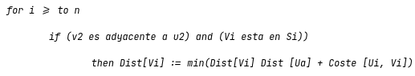
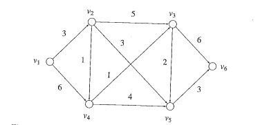
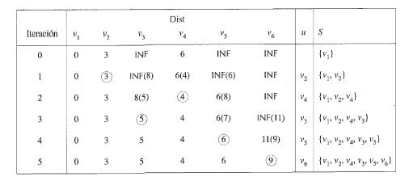
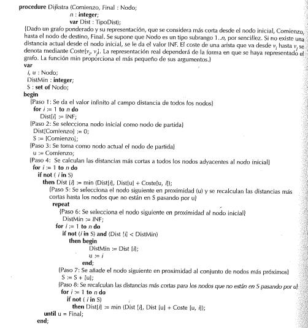

Edsger Wybe Dijkstra creador del algoritmo de Dijkstra (11 de mayo de 1930 en Róterdam, Países Bajos - 6 de
agosto de 2002 en Nuenen, Países Bajos) mientras tomaba café con su novia (y futura esposa) Maria (Ria) C.
Debets. Estaban planeando un viaje por Europa y querían encontrar la ruta más corta entre ciudades.
Diseñó la solución en 20 minutos sin lápiz ni papel. Mientras esperaban en una cafetería, Dijkstra resolvió
mentalmente el problema que había estado ponderando.
Insertar imagen
Dijkstra publicó el algoritmo en 1959 en un artículo de solo dos páginas titulado:
"A note on two problems in connexion with graphs" (Una nota sobre dos problemas en conexión con grafos)
Se programó en el ARMAC, una de las primeras computadoras en los Países Bajos.
El procedimiento desarrollado por Dijkstra para identificar trayectorias de costo mínimo en grafos.
Partiendo de una estructura con n nodos (v₁, v₂, ..., vₙ), el propósito fundamental es establecer la distancia
más corta entre v₁ y vₙ. Sin embargo, la estrategia computa simultáneamente las distancias mínimas desde el
nodo origen hacia todos los vértices restantes. La implementación asigna a cada nodo un valor de distancia,
inicializando v₁ en cero (representando la nula distancia consigo mismo) y los demás en un valor que indica
distancia desconocida.
El método itera seleccionando en cada paso el nodo no procesado más cercano a v1, actualizando distancias y
agregándolo al conjunto S de nodos resueltos. Cuando vn es incorporado a S, se ha encontrado la distancia mínima
entre v1 y vn. En todo momento, la distancia almacena la menor distancia posible entre ambos nodos
Como ejemplo de este enfoque, considérese el digrafo ponderado de la figura 7.43. Al hallar las distancias
más cortas desde v1 hasta otros nodos del grafo, se actualiza el vector de distancia actual Dist cada vez
que se selecciona un nuevo elemento y se coloca en S. Durante la k-ésima iteración, supongase que S, denota
el conjunto de nodos más próximos seleccionados hasta esa iteración, y que uk denota el nodo siguiente en
proximidad. Las distancias más cortas recalculadas para todos los nodos que no están en Sk y son adyacentes
a uk se obtiene mediante el siguiente fragmento de programa:

A cada interacción, antes de hallar el nodo siguiente en proximidad, el vector de distancia actual contendrá
la distancia más corta entre v1 y todos los nodos del grafo, siempre y cuando todos los nodos intermedios de
todos los caminos se hayan seleccionando dentro de S. Observe que la distancia actual hasta uk desde v1
sigue siendo la misma(esto es, la distancia más corta desde v1).
Esta observación sigue siendo cierta para todos los nodos que no sean adyacentes a uk. Si no hay ningún
camino desde v1 hasta un cierto nodo que tenga esta propiedad, entonces se da el valor INF a la distancia
actual de este ultimo nodo. Inicialmente, se hace Dist [v1] = 0, Dist [v2] = 3, Dist [v3] = 6 y Dist [vi] =
INF para todos los demás nodos, y S = {vi}.

En la primera interacción se selecciona el nodo siguiente en proximidad con respecto al nodo v1. El nodo más
próximo a v1 es v2, y por tanto se pone v2 en S. A continuación se calcula la distancia más corta de todos
los nodos adyacentes a v2 y que no estén en S. El nuevo cálculo de longitudes desde v2 hasta v3, v4 y v5
produce, respectivamente, los valores 8, 4 y 6. Esto completa la primera interacción que se resume en la
segunda fila de la figura 7.44. Las distancias actualizadas van entre paréntesis.
Durante la segunda interacción se busca el nodo segundo en proximidad con respecto al nodo v1. Hay tres
nodos adyacentes a v2: v3, v4 y v5. Por tanto se selecciona el nodo v4 como segundo nodo en proximidad a v1,
y se pone en S. Se vuelven a calcular las distancias actualizadas por los nodos adyacentes a v4 y que no
están en S. El nuevo cálculo de las distancias a v3 y v5 produce los valores de 5 y 8, respectivamente.
En la tercera iteración, los nodos v3 y v5 son adyacentes a v4, y v3, es el más próximo. Por lo tanto, el
próximo nodo que se seleccione es v3. Los nodos v5 y v6 son adyacentes a v3, y el nuevo cálculo de sus
distancias produce, respectivamente, los valores 7 y 11. La distancia 11 es la distancia mínima actual a v6;
sin embargo, la distancia 5 no es la distancia mínima a v5 y por tanto se mantiene la distancia mínima igual
a 6.
Las dos iteraciones siguientes seleccionan sucesivamente a v5 y v6. La última iteración produce una
distancia más corta entre v1 y v6 cuyo valor es 9.
El enfoque anterior se ha formalizado en el procedimiento que se dan en la imagen anterior. Observe que
algunas de las
sentencias del procedimiento no son sentencias validas sintácticamente en Pascal. La otra forma exacta de
estas estructuras depende de la forma en que esté representada la estructura del grafo, esto es, dependen de
si utilizan una matriz ponderada de adyacencias o bien un directorio de tablas de nodos con listas de
adyacencia. Este asunto se examinará de nuevo en breve.

A continuación se considera brevemente el análisis temporal en caso peor del algoritmo de Dijkstra. Puede
ser necesario ejecutar el paso 5 para un máximo de n - 1 nodos, puesto que el nodo inicialmente seleccionado
es Comienzo. Considérese ahora la ejecución de las sentencias if presentes en los pasos 6 y 8, que son
rótulos de los dos bucles internos del bucle principal del paso 5. Si se utiliza una representación de
matriz de adyacencia, entonces el caso peor puede necesitar n -1 ejecuciones de las sentencias if. Por lo
tanto, el análisis temporal del algoritmo en el caso peor es O(n^2). Sin embargo, en el caso medio u puede
ser igual a buscar en el bucle repeat…unitl mucho antes de que sea necesario efectuar las n - 1 iteraciones
máximas. Por otra parte, si se emplean listas de adyacencia para representar el grafo y el número de aristas
del grafo es mucho menor de n^2 (esto es, si el grafo es disperso), digamos con m = O (n) donde m denota el
número de aristas, entonces suponiendo que se almacene la matriz de costes, el algoritmo puede ser bastante
mejor que O(n^2).
El algoritmo considerado busca la distancia más corta de un nodo a otro. Se puede emplear un enfoque similar
al utilizado en el algoritmo de Floyd dado anteriormente para hallar los nodos del camino más corto. Con
este objeto, se puede guardar en cada iteración el índice del nodo predecesor dentro del camino más corto
hasta el nodo siguiente en proximidad que se coloca en S. Esta información se puede obtener modificado el
paso 8 de la tercera figura. Cuando se produce una disminución de la distancia actual porque hay una arista
que
va desde el nodo u hasta el nodo i, hasta con registrar el nodo u como predecesor. Eventualmente, cuando el
nodo final entre en S, se puede retroceder hasta el nodo especificado. Comienzo empleando la información
relativa a los nodos predecesores.

Igualmente se podría considerar una serie de pasos para determinar la longitud de la trayectoria más corta
entre
dos vertices, esta serie de pasos se puede ver en la imagen anterior.